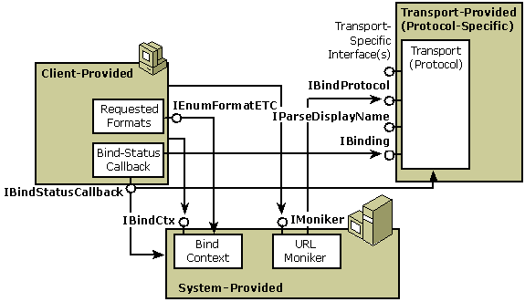

The OLE moniker architecture provides a convenient programming model for working with URLs. The moniker architecture supports extensible and complete name parsing through the MkParseDisplayName function and the IParseDisplayName and IMoniker interfaces, as well as printable names through the IMoniker::GetDisplayName method. The IMoniker interface is the way you actually use URLs you encounter, and building components that fit into the moniker architecture is the way to actually extend URL namespaces in practice.
A system-provided moniker class, the URL moniker, provides a framework for building and using certain URLs. Because URLs frequently see resources across high-latency networks, the URL moniker supports asynchronous as well as synchronous binding. The URL moniker does not currently support asynchronous storage.
The following diagram shows the components involved in using URL monikers. All these components should be familiar. (See Asynchronous Monikers.)

Like all moniker clients, a user of URL Monikers typically creates and holds a reference to the moniker as well as to the bind context to be used during binding (IMoniker::BindToStorage or IMoniker::BindToObject). To support asynchronous binding, the client can implement a bind-status-callback object, which implements the IBindStatusCallback interface, and register it with the bind context using the RegisterBindStatusCallback function. This object will receive the transport's IBinding interface during calls to IBindStatusCallback::OnStartBinding.
The URL Moniker identifies the protocol being used by parsing the URL prefix and then retrieves the IBinding interface from the transport layer. The client uses IBinding to support pausing, cancellation, and prioritization of the binding operation. The callback object also receives progress notification through IBindStatusCallback::OnProgress, data availability notification through IBindStatusCallback::OnDataAvailable, and various, other transport-layer notifications about the status of the binding. The URL moniker or specific transport layers may also request extended information from the client through IBindStatusCallback::QueryInterface, allowing the client to provide protocol-specific information that will affect the bind operation.
For more information, see the following topics:
Â
Â